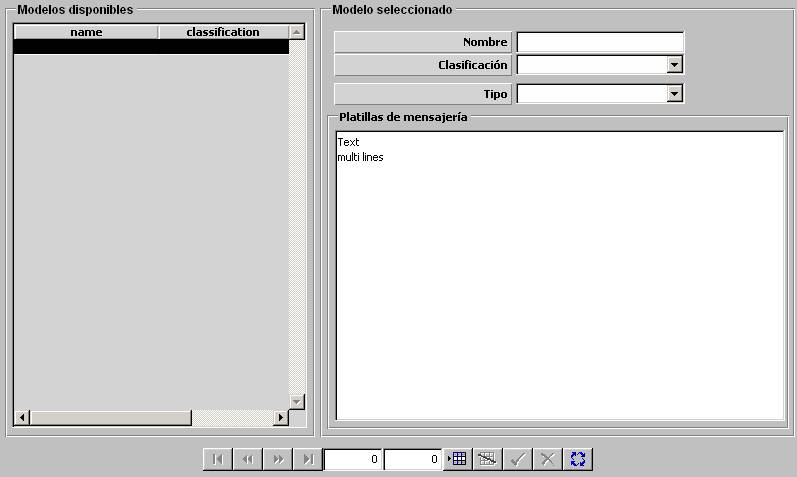

Base de Datos de Mensajería

Mediante esta tabla se especifican todas las plantillas de mensajes disponibles para el modelo de Mensajería. Este diálogo permite la elaboración de mensajes de textos de formato libre, lo cual posibilitará la creación de una colección de mensajes de texto que se ajusten a los mensajes Estructurados y Formateados.
Durante la Ejecución de un Ejercicio, cuando el operador solicite la creación de nuevo mensaje, desde la ventana de edición de mensajes, se le permitirá seleccionar entre mensaje de texto libre o seleccionar cualquiera de las plantillas creadas en la Base de Datos de Mensajería.
Para cada plantilla se especifican los siguientes parámetros:
Tipo: Este parámetro de tipo texto libre que determina el tipo de plantilla. Este campo es empleado por el desde el diálogo de edición de mensajes para filtrar las plantillas disponibles. Es decir, para seleccionar una plantilla, previamente deberá seleccionar el tipo plantilla deseado, con lo cual sólo se le listaran las plantillas de este tipo. Esto permitirá tener las plantillas de mensajes más organizadas.
Plantilla: Parámetro de tipo texto libre que constituye la plantilla del mensaje.